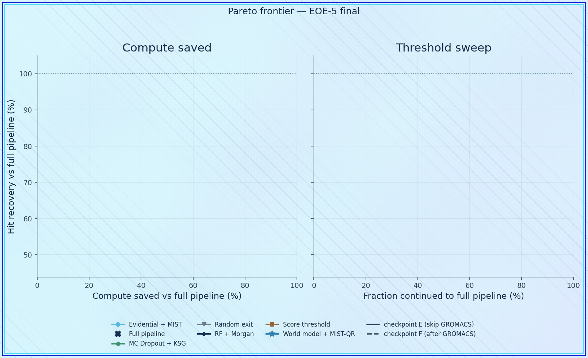
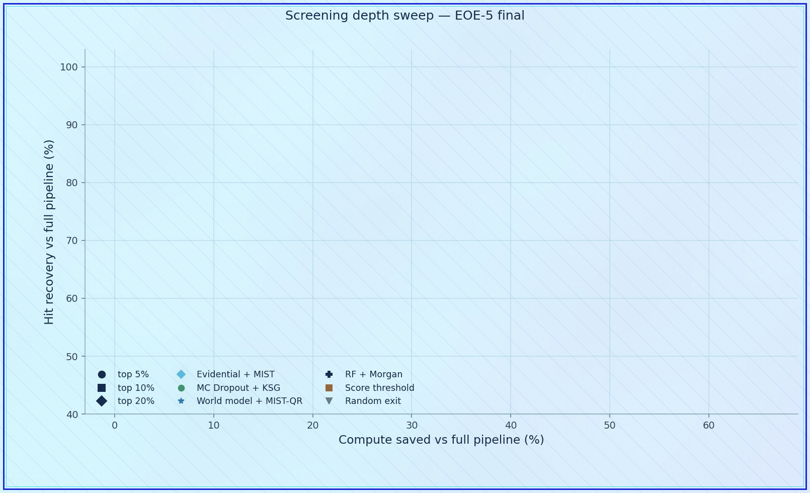
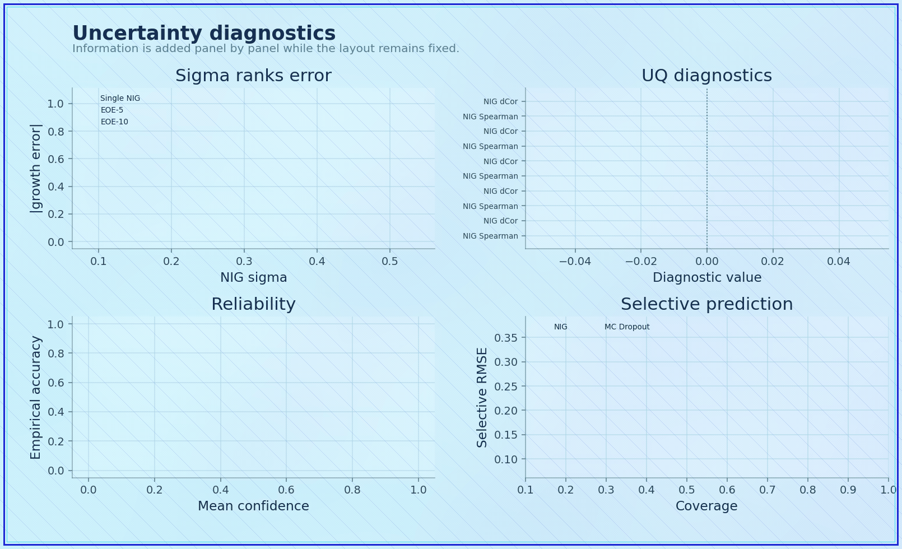
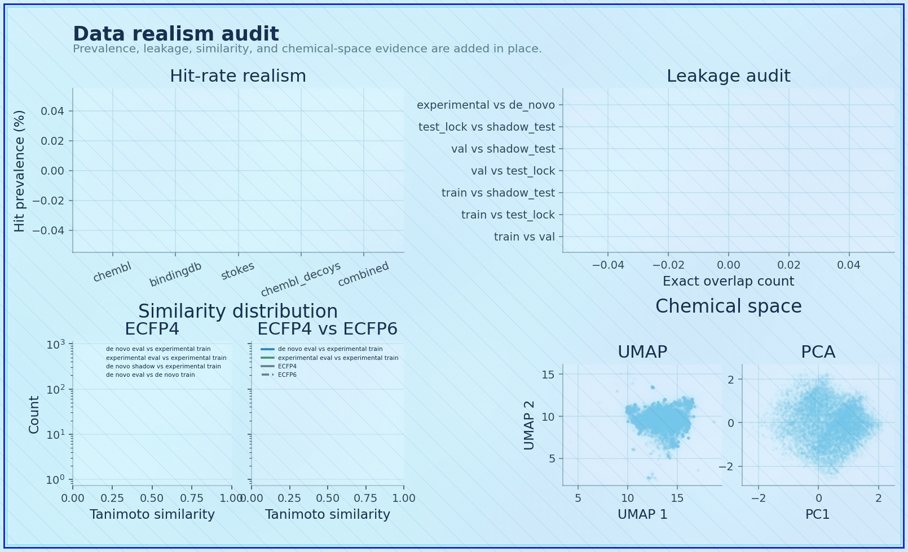
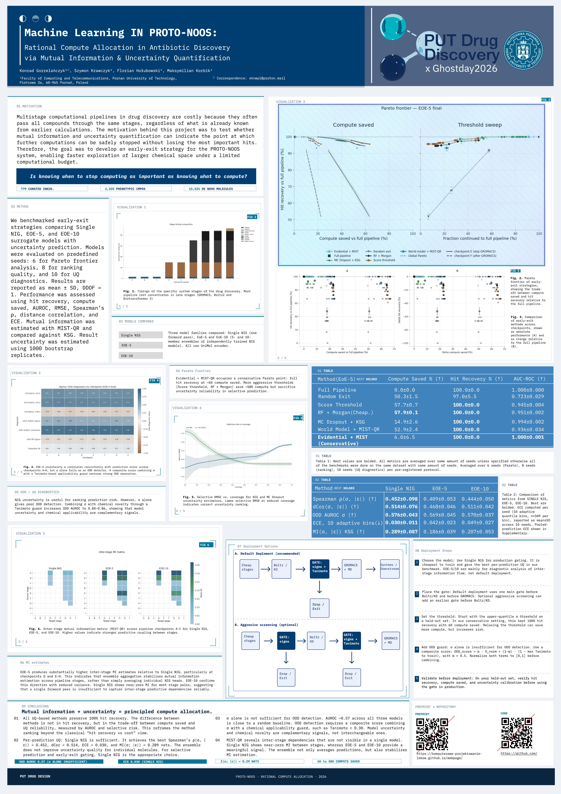

PROTO-NOOS: Rational Compute Allocation in Antibiotic Discovery via Mutual Information and Uncertainty Quantification
GitHub Repository
Scan the QR code or open the repository directly.
github.com/Komputerowe-Projektowanie-Lekow/GUB_MLAbstract
Large-scale computational screening of compounds with tools designed to predict molecules with specific properties requires substantial computational time and resources. The initial search for promising candidates and the subsequent optimization of those candidates are distinct processes and should be treated as separate stages of the drug discovery workflow.
In this context, molecular search can be framed as an optimization problem: the goal is to obtain the best possible result at the lowest feasible computational cost. By using known antibiotics against a given target, it is possible to generalize how specific compounds interact with the receptor. When additional phenotypic data are incorporated, the performance of computational tools can be compared against experimental outcomes, allowing their behaviour to be estimated and evaluated using machine learning models.
In this study, we used mutual information and uncertainty quantification methods to analyze a dataset of de novo compounds generated by our PROTO-NOOS system. PROTO-NOOS is designed to generate labels consistent with state-of-the-art computational tools and public experimental data reported in previous studies.
We performed a benchmark evaluating EoE-5 and EoE-10 models across six random seeds for each method. The aim was to assess how these approaches perform on our problem and to determine their suitability for reducing computational cost while preserving predictive quality.
Our results indicate which strategies are most appropriate for users who want to simplify expensive computational workflows by replacing selected stages with lower-cost surrogate models. In addition, we analyzed how predictions differ between single models, EoE-5, and EoE-10 ensembles, and how uncertainty relates to the training data and the diversity of the evaluated compounds.
The results suggest that random forest-based strategies are useful when the primary goal is aggressive cost reduction, even if this comes with some loss of quality. In contrast, evidential models combined with MIST-QR provide a more conservative strategy, where computational savings are achieved while maintaining stronger control over uncertainty and prediction reliability.
This work is relevant for researchers developing or using modular, open-source drug design pipelines that combine multiple computational tools. The proposed approach can help determine where mutual information and uncertainty quantification can be used to reduce computational cost during large-scale compound screening without fully abandoning the reliability of more expensive downstream methods.
What This Work Is About
PROTO-NOOS asks a practical question for computational drug discovery: when a pipeline contains expensive downstream stages, which predictions are worth paying for, and which can be approximated by cheaper surrogate models without losing too much reliability?
The note treats compute as a scarce experimental resource. Mutual information is used to identify where a model can learn the most from additional labels, while uncertainty quantification helps decide when predictions are stable enough to replace or postpone expensive calculations.
Animated Workflow
The four animations below show how PROTO-NOOS frames the search problem: trade-offs, screening depth, uncertainty, and dataset realism are treated as connected design choices rather than isolated plots.




Poster

Click the poster preview to open the full PDF.